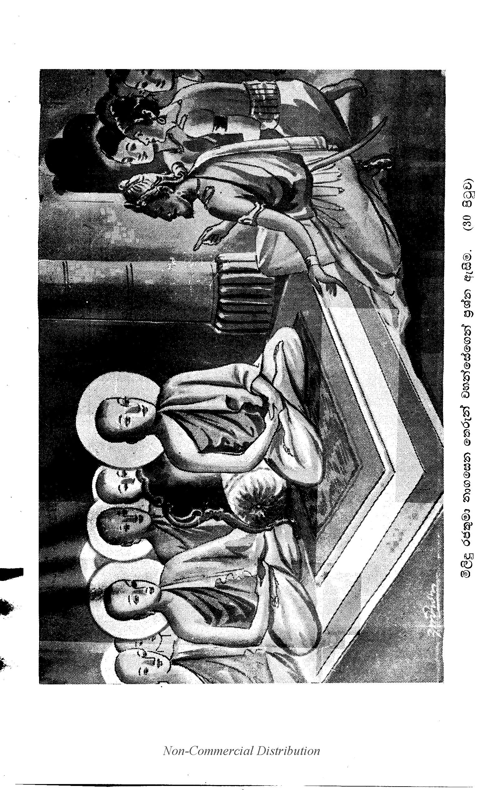

පූර්වයොගප්රශ්නය යි.
(28) ඉක්බිති මිලිඳු රජ්ජුරුවෝ චතුරංගිණීසේනාව පිරිවරා ගෙණ යම් තැනෙක ආයුෂ්මත් නාගසෙනස්ථවිරයන් වහන්සේ වැඩ වසන සේක් ද, එතැන්හි එළඹියාහ. එසේ එළඹ ආයුෂ්මත් වූ නාගසෙනස්ථවිරයන් වහන්සේ හා සමග සතුටු වූහ. සමඟ සතුටු විය යුතු වූ සිහි කට යුතු වූ කථාව කොට නිමවා එකත්පසෙක හුන්නාහ. ආයුෂ්මත් නාගසෙනස්ථවිරයෝ ද පිළිසඳර කථාවෙන් ම මිලිඳු රජ්ජුරුවන්ගේ සිත් ගෙණ වැඩ සිටිසේක. ඉක්බිති එකත්පස් ව හුන්නා වූ මිලිඳුරජ්ජුරුවෝ ආයුෂ්මත් නාගසෙනස්ථවිරයන්ට මෙපවත් කීහ. “ස්වාමීනි, පින්වතුන් වහන්සේ කෙසේ දැනෙත්[1] ද? නුඹ වහන්සේ කවර නම් වූ[2] දැ?” යි විචාළෝ ය. “මහරජානෙනි, මම නාගසේනය”යි දැනෙමි[3]. මහරජානෙනි, සබ්රහ්මචාරීන් වහන්සේලා මට ‘නාගසෙන’ ය යි කියති. තව ද නම් තබන්නා වූ දෙමවුපියෝ ‘නාගසෙනය’යි කියා හෝ ‘සුරසෙන’ය යි කියා හෝ ‘වීරසෙන’ ය යි කියා හෝ ‘සිංහසෙන’ ය යි කියා හෝ නම් කෙරෙති. තවද මහරජානෙනි, යම් මේ ‘නාගසෙන’ ය යි කියා සැලකිය යුතු වූ සංඥාමාත්ර වූ ප්රඥප්තිව්යවහාරය නාමමාත්රයෙක. මෙහි ‘නාගසෙන’ ය යි කියා පුද්ගලයෙක් නො ලැබෙන්නේ[4] ය” යි කීසේක. ඒ අසා ඉක්බිති මිලිඳු රජ්ජුරුවෝ මෙසේ කීහ:- ‘මේ සභායෙහි රැස් ව සිටිනා පන්සියයක් පින්වත් යොන්අමාත්යයෝ ද අසූදහසක් පමණ භික්ෂු සංඝයා වහන්සේ ද මාගේ වචනය ඇසුව මැනැව. මේ නාගසේනයන් වහන්සේ මෙහි ‘නාගසෙන’ ය යි කියා පුද්ගලයෙක් නො ලැබෙන්නේ4 ය යි මෙසේ කීසේක. ඒ වචනයට සතුටු වන්නට යහපත් දැ?” යි සියල්ලන්ට ම අස්වා කීහ.
නැවත මිලිඳු රජ්ජුරුවෝ ආයුෂ්මත් නාගසේනයන් වහන්සේට මෙපවත් කීහ:- “ස්වාමීනි, නාගසේනයන් වහන්ස, ඉදින් පුද්ගලයෙක් නො ලැබේ නම්, කවරෙක් දැන් නුඹ වහන්සේට සිවුරු අහරසෙනසුන් ගිලන්පසබෙහෙත්පිරිකර දේ ද? කවරෙක් ඒ දුන් සිවුපසය අනුභව කෙරේ ද? කවරෙක් සිල් රකී ද? කවරෙක් භාවනාවෙහි යෙදේ ද? කවරෙක් මාර්ගඵලනිර්වාණය සිද්ධ කෙරේ ද? කවරෙක් ප්රාණඝාත කෙරේ ද? කවරෙක් නුදුන් වස්තුව ගණී ද? කවරෙක් පඤ්චකාමයෙහි පරදාරයෙහි හැසිරේ ද? කවරෙක් බොරු කියා ද? කවරෙක් සුරාපානය කෙරේ ද? කවරෙක් පඤ්චානන්තරිය කර්මය කෙරේ ද? ඒ නිසා කුසල් නැත. අකුසල් නැත. කුශලාකුශලකර්මයන් කරණ කෙරෙණ හෝ කරවන කෙනෙක් හෝ නැත. කුශලාකුශලකර්මයන්ගේ ආනිසංසයත් නැත. විපාකත් නැත. එහෙයින් ‘නාගසේනයන් වහන්ස, යමෙක් නුඹ වහන්සේ මරා ද, ඕහට ප්රාණඝාතඅකුශලය නැත. ‘නාගසෙනස්වාමීනි, නුඹ වහන්සේටත් ගුරුහු නැත. උපාධ්යාය කෙනෙකුන් නැත. උපසම්පදාවක් නැත. “මහරජ, මට සබ්රහ්මචාරීන් වහන්සේලා නාගසෙන ය යි කියා වදාරණසේකැ’යි කියා යමක් නුඹ වහන්සේ කීසේක් ද, මෙහි නාගසෙන වූයේ කවරෙක් ද, කිමෙක් ද? ‘ස්වාමීනි, හිසකේ නාගසෙන දැ?” යි කීහ. ‘නැත, මහරජානෙනි.” (29) “එසේ වී නම්, නියපොතු දත් සම් මස් නහර ඇට ඇටමිදුලු වකුගඩු හෘදයමාංස අක්මාව දලබුව බඩදිව පපුව බඩවැල අතුනුබහන උදරය මලය පිත් සෙම් සැරව ලේ ඩහදිය මේදතෙල් කඳුළු වුරුණුතෙල් කෙළ සොටු සඳමිදුලු මුත්ර මස්තකයෙහි වූ හිස්මුල් නාගසෙන දැ?” යි කීහ. “නැත. මහරජානෙනි” වදාළ සේක. “කිමෙක් ද, ස්වාමීනි, එසේ වී නම් රූපය නාගසෙන දැ?” යි කීහ. ‘නැත, මහරජානෙනි.” “වේදනාව නාගසෙන දැ?” යි කීහ. “නැත මහරජානෙනි.” “සංඥාව නාගසෙන දැ?”යි කීහ. “නැත මහරජානෙනි.” “සංස්කාරය නාගසෙන දැ?” යි කීහ. “නැත මහරජානෙනි,” “විඥානය නාගසෙන දැ?”යි කීහ. “නැත මහරජානෙනි.” “කිමෙක්ද? ස්වාමීනි, රූප වේදනා සංඥා සංස්කාර විඥාන යන පස්කඳ නාගසෙන දැ?” යි විචාළෝ ය. “නැත මහරජානෙනි” වදාළ සේක. “කිමෙක් ද? ස්වාමීනි, රූප වේදනා සංඥා සංස්කාර විඥානය යන පසහැර නාගසෙන වනසේක් ද?” යි විචාළෝ ය. “නැත, මහරජානෙනි”යි වදාළසේක. “කිමෙක් ද? ‘ස්වාමීනි, මම නුඹ වහන්සේ අතින් විචාරන්නෙම්, නාගසෙන කෙනකුන් නො දක්නෙමි. ‘ස්වාමීනි, ශබ්දය නාගසෙන වී ද? නුඹ වහන්සේ කී මේ වචනයෙහි වනාහි නාගසෙන වූයේ කවරෙක් ද? ‘ස්වාමීනි, නුඹ වහන්සේ වචනාර්ථයෙන් සිස් වූ නාගසෙනයෙමි යි කියා මුසාවාදයක් කීසේක. නාගසෙන කෙනෙක් නැතැ”යි කීහ.
ඉක්බිති ආයුෂ්මත් නාගසෙනයන් වහන්සේ මිලිඳු රජ්ජුරුවන්ට මෙපවත් කීසේක:- “මහරජ, තෙපි වනාහි රාජසුඛමාල වූවහු ය. අත්යන්තයෙන් ම සිවුමැලි ය. ‘මහරජානෙනි, මධ්යාහ්න වේලෙහි අව්වෙන් වියලී රත් වූ උණුවැලි ඇත්තා වූ ක්රෑර වූ භූමියෙහි ගල්බොරළු කැබැලිති වැලි මිරිකා ගෙණ පයින් එන්නා වූ ඒ තොපගේ පාදයෝ රුදා ගණිති. ශරීරය ක්ලාන්ත වෙයි. සිත කැලඹෙයි. දුක් සහ ගියා වූ කාය විඤ්ඤාණය උපදනේ ය. එහෙයින් කිමෙක් ද? තෙපි පයින් ම ආවහු ද? නොහොත් වාහනයක නැඟී ගෙණ ආවහු ද?”යි විචාළසේක. ‘ස්වාමීනි, මම පයින් නො ආයෙමි. රථයෙන් මම ආයෙමි”යි කීහ. “මහරජ තෙපි ඉදින් රථයෙන් ආවහු නම්, රථය මට කියා දෙව. කිමෙක් ද? ‘මහරජ, රථඉස රථය ද?” යි විචාළසේක. “නැත ස්වාමීනි,” කීහ. “රථඅකුර රථයදැ”යි විචාළසේක. “නැත ස්වාමීනි”යි කීහ. “රථචක්රය රථයදැ”යි විචාළසේක. “නැත ස්වාමීනි”යි කීහ. “රථපඤ්ජරය රථය ද?” යි විචාළසේක. “නැත ස්වාමීනි”යි කීහ. “රථදණ්ඩකය රථයදැ”යි විචාළසේක. “නැත ස්වාමීනි”යි කීහ. “වියදණ්ඩ රථයද?. “නැත ස්වාමීනි”යි කීහ. “රථරෑන රථයද?. “නැත ස්වාමීනි”යි කීහ. “කෙවිටිලීය රථය දැ?” යි විචාළ සේක. “නැත ස්වාමීනි”යි කීහ. “කිමෙක් ද? මහ රජ, රථඉස රථඅකුර රථචක්රය රථපඤ්ජරය රථදණ්ඩ වියරෑණ කෙවිට යන මේ සියල්ල ම රථය දැ?” විචාළසේක. “නැත ස්වාමීනි.” “කිමෙක් ද? මහරජානෙනි, රථඉස රථඅකුර රථචක්රය රථපඤ්ජරය රථදණ්ඩ රථවිය රථරෑණ රථකෙවිට හැර රථය ද?” යි විචළසේක. “නැත ස්වාමීනි” යි කීහ.
“එම්බා, මහරජානෙනි, මම තොප අතින් නැඟී ආ රථය විචාරන්නෙම් රථයක් නො දක්නෙමි. ශබ්දය ම මහරජානෙනි, රථය වී ද? තොප මේ කී වචනයෙහි රථය කවරේ ද? මහරජ, තෙපි බොරු වූ මුසාවාදයක් කීහු ය. ඇති රථයෙක් නැත. මහරජ, තෙපි සකල (30) ජම්බුද්වීපයෙහි අග්රරාජතනතුරට පැමිණියහු. තෙපි වනාහි කවුරුන්ට භය ගෙණ කුමක් පිණිස මෙසේ බොරු කියවු ද? අහෝ! මෙතැන්හි රැස් වූ පන්සියයක් පමණ පින්වත් යොන්ඇමැතියන් හා මහසෙනඟත් අසූදහසක් පමණ මහාසංඝයා වහන්සේත් මාගේ වචනය ඇසුව මැනැව. මේ මිලිඳුරජ ‘රථයෙන් මම ආයේ වීමි’යි මෙසේ කීයේ ය. දැන් මා විසින් “මහරජ, ඉදින් තෙපි රථයකින් ආවහු වූ නම්, රථය මට කිව මැනැවැ’යි කියන ලදුයේ ම රථයෙක නමක් නැවත නො දක්වයි. ඒ කාරණයට[5] සන්තොස වන්නට යහපත් දැ?”යි වදාළසේක.
නාගසෙන ස්ථවිරයන් වහන්සේ මෙසේ වදාළ කල්හි අතිප්රසන්න වූ පන්සියයක් යොන් අමාත්යයෝ ආයුෂ්මත් නාගසෙන ස්ථවිරයන් වහන්සේට සාධුකාර දී මිලිඳුරජ්ජුරුවන්ට මේ වචනය කීවාහු ය:- “දෙවයන් වහන්ස, මෙතෙක් දවස් කථාවට නිසි පණ්ඩිතකෙනෙකුන් නො ලත්සේක. අද දැන් නුඹ වහන්සේ බලා නොයිඳ සමර්ථසේක් වී නම් තෙල වචනයට උත්තර දී කථා කර වදාළ මැනැවැ”යි කීවාහු ය. ඒ අසා ඉක්බිති මිලිඳු රජ්ජුරුවෝ ආයුෂ්මත් නාගසෙනයන් වහන්සේට මෙපවත් කීහ:- “ස්වාමීනි, නාගසෙනයන් වහන්ස, මම බොරු කීවා නො වෙමි. රථ හිස නිසාත්-රථඅකුර නිසාත්-රථචක්රය නිසාත්-රථමැඳුර නිසාත්-රථදණ්ඩකය නිසාත්-රථවිය නිසාත්-රථරෑණ නිසාත්- කැවිට නිසාත්-මේ හැම එක් වූ කල රථය කියා සංඛ්යා, සංඥා, ප්රඥප්තිය ව්යවහාරය, නාමය යි කියා පවත්නේ ය”යි කීහ.
ඒ අසා නාගසෙන තෙරුන් වහන්සේ “මහරජානෙනි, තොප කී රථයෙහි දැන් පූර්වාපරවිරොධයක් නැත. තෙපි රථය ඉඳුරා ම දන්නාහු[6] ම ය. මහරජානෙනි, එපරිද්දෙන් ම මාගෙත් හිසකේ නිසාත්-ලොමයන් නිසාත්-(දත් ආදි වූ) හිස්මුල් නිසාත්-රූපය නිසාත්-රූපය නිසාත්-වෙදනාව නිසාත්-සංඥාව නිසාත්-සංස්කාරය නිසාත්-විඥානය නිසාත්-මේ හැම එක්වූ කල “නාගසෙන ය”යි කියා සංඛ්යා, සංඥා, ප්රඥප්ති, ව්යවහාර වූ නාගසෙන නාමමාත්රයක් පවත්නේ ය. පරමාර්ථවශයෙන් වනාහි මෙහි

නැවතත් රජ්ජුරුවෝ “ස්වාමීනි, නාගසෙන ස්ථවිරයන් වහන්ස, නුඹ වහන්සේ මා හා සමග කථා කරණ සේක් දැ?”යි කීහ. “මහරජානෙනි, ඉදින් තෙපි පණ්ඩිත වාදයෙන් කථා කරවු නම්, මමත් කථා කෙරෙමි”යි ඉදින් රාජවාදයෙන් කථා කරවු නම්, මම කථා නො කෙරෙමි”යි වදාළසේක. “ස්වාමීනි, නාගසෙනයන් වහන්ස, පණ්ඩිතයෝ කෙසේ කථා කෙරෙද් දැ?”යි විචාළෝ ය. “මහරජානෙනි, පණ්ඩිතවරුන්ගේ කථාවෙහි ගම්භීරාර්ථ ඇති තද පද ගෙණ රැහැනින් වෙළන්නාක් මෙන් වෙහස දී ආවෙඨනයත් කරණු කැබෙයි. තද ගැට මුදන්නාක් මෙන් නො හැඟෙන අර්ථයන් තෙමේ ම තෝරා දෙමින් නිර්වෙඨනයත් කරණු ලැබෙයි. තමන් විචාළ අර්ථ ප්රශ්න තෝරා ලිය නො හෙන කල නැවැත නැවැතත් විචාරමින් නිග්රහත් කරණු ලැබෙයි. එකට එක කිරීමෙන් ප්රතිකර්මත් කරණු ලැබෙයි. තමන් දන්නා ශාස්ත්රවිශෙෂය දක්වමින් ප්රතිවිශෙෂයත් කරණු ලැබෙයි.[7] තමන් ම උසස් කරන්නාක් මෙන් ප්රතිවෙධයත් කරණු ලැබෙයි. එකල්හි ද පණ්ඩිතයෝ නො කිපෙති. මහරජානෙනි, මෙසෙයින් පණ්ඩිතවරු කථා කෙරෙති”යි වදාළසේක.
“ස්වාමීනි, රජහු කෙසේ කථා කෙරෙද් දැ?”යි කීහ. “මහරජානෙනි, රජහු වනාහි කථා කරණ කල එක වස්තුවක් මේ ලෙස ය යි කියා දන්වති. යම් කෙනෙක් ඒ කාරණය වරදවා කීවෝ නම් ‘මොහුට දඬුවම් පණවවු’ කියා ඕහට දඬුවම් කරන්නට ආඥා කෙරෙති. “මහරජානෙනි, රජදරුවෝ මෙසේ කථා කෙරෙති”යි වදාළසේක. ‘එසේ වී නම්, ස්වාමීනි, මම පණ්ඩිත වාදයෙන් කථා කෙරෙමි. (32) රාජවාදයෙන් කථා නො කෙරෙමි. පින්වතුන් වහන්සේ සැක නො කොට කථා කළ මැනැව. යම් සේ භික්ෂූන් වහන්සේ නමක් හා සමඟ හෝ සාමණේර නමක් උපාසක ආරාමික කෙනෙකුන් සමඟ හෝ කථා කරණසේක් ද, එපරිද්දෙන් ම කිසි සැකයක් නැතු ව පින්වතුන් වහන්සේ කථා කළ මැනැව. මා රජ ය යි සිතා භය නො ගෙණ වදාළ මැනැව”යි කීහ. “යහපත මහරජානෙනි,’ යි කියා තෙරුන් වහන්සේ සම්මුඛයෙහි ම ඉවසූසේක.
එකල රජ්ජුරුවෝ “ස්වාමීනි, නාගසෙනයන් වහන්ස, ප්රශ්නයක් අසමි”යි කීහ. “මහරජ, විචාරව”යි වදාළසේක. “ස්වාමීනි, මා විසින් ප්රශ්නය අසල ලද්දේ ය”යි කීහ. “මා විසින් ප්රශ්නය විසඳන ලද්දේ ය”යි වදාළසේක. “ස්වාමීනි, නුඹ වහන්සේ විසින් විසඳන ලද්දේ කිමෙක් දැ?”යි කීහ. “මහරජ, තොප විසින් විචාළේ කිමෙක් දැ?”යි වදාළසේක. ඉක්බිති මිලිඳු රජහට මෙබඳු කල්පනාවෙක් වී ය:- මේ මහණුන්නාන්සේ පණ්ඩිත වූසේක. මා හා සමඟ කථා කරන්ට සමර්ථසේක. මා විසින් ද බොහෝ වූ කාරණයෝත් ඇසිය යුත්තාහු වෙති. යම්තාක් ඒ කාරණයෝ[8] තව ම නො අසන ලද්දාහු ම වෙති. එතෙකුදු වුවත් හිරු අස්තංගත වි ය.
එසේ හෙයින් මම හෙට දවස්හි මාගේ ඇතුළුරජගෙයි දී කථා කෙළෙම් වීම් නම්, ඉතා යෙහෙකැ”යි සිතා නැවැත මිලිඳුරජ්ජුරුවෝ දෙවමන්ත්රියාට මෙපවත් කීහ.[9]
“දෙවමන්ත්රිය, අද සවස් වී ය. එසේ හෙයින් තොප සෙට දවස්හි ඇතුළුරජගෙයි දී රජ්ජුරුවන් සමඟ කථාසල්ලාපය වන්නේය” යි කියා පින්වතුන් වහන්සේට කියව”යි කියා මේ වචනය කියා මිලිඳුරජ්ජුරුවෝ හුන් ආසනයෙන් නැඟී සිට නාගසෙන තෙරුන් වහන්සේට ආමන්ත්රණය කොට සමු ගෙණ අශ්වවාහනයකට පැන නැඟී නාගසෙන ය” යි කියා සජ්ඣායනා කෙරෙමින් ගියාහ. ඉක්බිති “දෙවමන්ත්රියා ආයුෂ්මත් නාගසෙනයන් වහන්සේට මෙපවත් කීයේ ය:- “ස්වාමීනි, අපගේ මිලිඳු රජ්ජුරුවෝ සෙට් දවස ඇතුළු රජගෙයි දී කථා කිරීම වන්නේ ය යි කියා මෙසේ සැළකරන්නට කීසේකැ”යි කීයේ ය. තෙරුන් වහන්සේ ද ‘යහපතැ’යි කියා ඉවසූසේක.
ඉක්බිත්තෙන් එදවස් රාත්රියාගේ ඇවෑමෙන් දෙවමන්ත්රි නම් අමාත්යයා ද අනන්තකාය නම් අමාත්යයා ද, මංකුර නම් අමාත්යයා ද, සබ්බදින්න නම් අමාත්යයා ද යන සතරදෙන යම් රජගෙයක මිලිඳු රජ වෙසේ ද, එතැනට එළඹියෝ ය. එසේ එළඹ මිලිඳුරජහට මෙපවත් කිවු ය. “දෙවයන් වහන්ස, අද රජගෙයි දී වැළඳීමට භවත් නාගසෙනයන් වහන්සේ එනසේක් දොහො?”යි විචාළෝ ය. “එසේ ය, දන් වැළඳීමට වැඩිය මැනැවැ යි කියා ආරාධනා කරව”යි කීහ. “ස්වාමීනි, කොපමණ වූ සංඝයා සමඟ වඩනාසේක් දැ?”යි විචාළෝ ය “යම් පමණ සංඝයා කැඳවා ගෙණ වඩින්ට කැමැති නම් එපමණ සංඝයා සමඟ වැඩිය මැනැවැයි කියා ආරාධනා කරව”යි කීහ. නැවතත් සබ්බදින්නයා “දේවයන් වහන්ස, දසනමක් හා සමඟ වැඩිය මැනැවැ යි කියා ආරාධනා කෙරෙම් ද?” යි කීය. දෙවනු රජ්ජුරුවෝ “යම් පමණ සංඝයා උන්වහන්සේට අභිප්රාය නම් එපමණ සංඝයා හා සමඟ වැඩිය මැනැවැ යි (33) කියා ආරාධනා කරව”යි කීහ. සබ්බදින්නයා දෙවනුත් “දේවයන් වහන්ස, දසනමක් සමඟ වඩින්ට ආරාධනා කෙරෙම් දැ?”යි කී හ. රජ්ජුරුවෝ තුන්වෙනුවත් “යම් පමණ සංඝයා කැඳවා ගෙණ වඩින්නට උන්වහන්සේ කැමැති නම්, එපමණ වූ සංඝයා සමඟ වැඩිය මැනැවැ යි කියා ආරාධනා කරව”යි කීහ.
එකල සබ්බදින්න නම් ආමාත්යයානෝ, “අසූදහසක් පමණ මහා සංඝයා වහන්සේ රජගෙට රැස් වූ කල දැන් අමුතු දනක් සරහා පියන්ට කල් නැති හෙයින් දානොපකරණය කෙසේ දෝ හො?”යි රජුගේ සිත් කෙසේ දෝහො?”යි පරීක්ෂා කරණු පිණිස තුන්වැනිවත් “දෙවයන් වහන්ස, දසනමක් හා සමඟ වැඩිය මැනැව යි කියා ආරාධනා කෙරෙම් ද?”යි කීහ. එබසට රජ්ජුරුවෝ කියන්නාහු “සියලු ම දානොපකරණ පිළියෙල කරණ ලද්දේ ය. එබැවින් යම්පමණ සංඝයා උන්වහන්සේට කැමැති නම් එපමණ සංඝයා හා සමඟ වඩින්ට ආරාධනා කරව’යි කියා මම කියමි. ‘එම්බා සගයෙනි, මේ සබ්බදින්න අමාත්යයා මා හා සමඟ අනික් ප්රකාරයකින් කථා කරන්නේ ය. කිමෙක් ද, අපි අසූදහසක් පමණ භික්ෂූන් වහන්සේලාට ආහාර දන් දෙන්ට අසමර්ථමෝ දැ?”යි මෙසේ මිලිඳු රජ්ජුරුවන් කී කල්හි සබ්බදින්නයා නිස්තේජස්ක ව ඉවත් විය. ඉක්බිති දෙවමන්ත්රි නම් අමාත්යයා ද අනන්තකාය නම් අමාත්යයා ද, මංකුර නම් අමාත්යයා ද යන තුන්දෙන රජ්ජුරුවන් වැඳ අවසර ගෙණ යම් සංඛෙය්ය නම් පිරිවෙණක ආයුෂ්මත් නාගසෙන ස්ථවිරයන් වහන්සේ වැඩ වසනසේක් ද, එතැනට එළඹියාහු ය. එසේ එළඹ ආයුෂ්මත් නාගසේනයන් වහන්සේට මෙපවත් කීවාහු ය:- “ස්වාමීනි, අපගේ මිලිඳුරජ්ජුරුවෝ නාගසෙනයන් වහන්සේ යම් පමණ සංඝයා කැඳවා ගෙණ වඩින්ට කැමතිසේක් නම්, එපමණ සංඝයා හා සමඟ රජගෙට වළඳන්ටඑනසේක්වා”යි මෙසේ කියා අප ආරාධනාවට එවූසේකැ”යි කියා ආරාධනා කළෝ ය.
ඉක්බිති ආයුෂ්මත් නාගසෙනස්ථවිරයන් වහන්සේ උදය කාලයෙහි සකස් කොට හැඳ පෙරෙව කයින් සිවුරු හා අතින් පාත්රය ගෙණ අසූදහසක් පමණ සංඝයා හා සමග සාගල්නුවර කරා වැඩිසේක. ඉක්බිති අනන්තකාය නම් අමාත්යයා ආයුෂ්මත් නාගසෙනයන් වහන්සේ නිසා කැටු ව ම යෙමින් ආයුෂ්මත් නාගසේනයන් වහන්සේට මෙපවත් කීයේ ය:- ‘ස්වාමීනි, නාගසෙන ස්ථවිරයන් වහන්ස, “නාගසෙන ය’ යි කියා යම් මේ නමක් කියම් ද, මෙකී නාමයෙහි නාගසෙන වූයේ කවරේ දැ?”යි කී ය. එකල තෙරුන් වහන්සේ “මෙහි වනාහි තෙපි කවරෙක් ‘නාගසෙනය. ය යි කියා සිතන්නාහු දැ?” යි කීසේක. “ස්වාමීනි, අභ්යන්තරයෙහි යම් ඒ ජීව වූ ප්රාණවාතය ප්රවෙශ වේ ද, පිටතට නික්මේ ද, ඒ වාතය තෙම ‘නාගසෙන’ ය යි කියා සිතමි” යි කී ය. “අනන්තකායයෙනි, ඉදින් වනාහි මේ ප්රාණවාතය නික්ම ගොස් ප්රවෙශ නො වූයේ වී නම් ප්රවෙශ ව හෝ නික්මුනේ වී නම්, ඒ පුරුෂතෙම ජීවත් වේ ද?” යි විචාළසේක. ‘නැත, ස්වාමීනි,’ යි කී ය. “මෙ නුවර සංඛනාද කරන්නා වූ යම් කෙනෙක් සක් පිඹිති. ඔවුන්ගේ පිඹපු වාතය නැවත ප්රවෙශ වේ ද?”යි විචාළසේක. “නැත, ස්වාමීන් වහන්සැ” යි කී ය. මෙ නුවර වස් කුලල් ආදිය පිඹින්නා වූ යම් කෙනෙක් වස් කුලල් ආදිය පිඹිති. ඔවුන්ගේ ඒ (34) පිඹපු වාතය නැවත ප්රවෙශ වේ දැ?” යි විචාළසේක. “නැත” ස්වාමීනි, යි කීය. “මෙ නුවර අඟෙන් කළ සොරණෑ ආදිය පිඹින්නා වූ යම් කිසි කෙනෙක් ශෘංග පිඹිති. ඔවුන්ගේ ඒ පිඹිපු වාතය නැවත ප්රවෙශ වේ දැ?”යි විචාළ සේක. “නැත. ස්වාමීනි”යි කී ය, “හේ කිමෙක් ද? කුමන කාරණයක් පිණිස ඒ සංඛ වංශ ශෘංග ධමකයෝ නො මියෙන්නාහු දැ?”යි විචාළසේක. ස්වාමීනි, නුඹ වහන්සේ වැනි ප්රාඥ[10] වාදීන් සමග කථා කරන්නට මම සමර්ථ නො වෙමි. “ස්වාමීනි, මනා කොට මට වැටහෙන ලෙසට අර්ථ වදාළ මැනැවැ”යි ආරාධනා කෙළේ ය. “අනන්තකායයෙනි, මේ අභ්යන්තරගත වාතයතෙම ජීවිතය නො වෙයි. ආශ්වාසප්රශ්වාසයෝ නම් වෙති. මේ ආශ්වාසප්රශ්වාසයෝ කායසංස්කාරයෝ ය” යි කියා තෙරුන් වහන්සේ අභිධර්මකථාවක් කර වදාළසේක. එකල අනන්තකාය නම් අමාත්යයා අතිප්රසන්න ව තමාගේ උපාසකභාවය දන්වමින් කැටි ව ගියේ ය.
මෙසේ අනන්තකාය නම් අමාත්යයා පහදවමින් නැවත ආයුෂ්මත් නාගසෙන ස්ථවිරයන් වහන්සේ යම් තැනෙක මිලිඳුරජහුගේ නිවෙසනය ද, එතැන්හි එළඹිසේක. එසේ එළඹ පණවන ලද දීර්ඝාසනයෙහි අසූදහසක් පමණ රහතුන් සමඟ වැඩ සිටිසේක.
ඉක්බිති මිලිඳු රජානෝ අසූදහසක් පිරිවර සහිත වු ආයුෂ්මත් නාගසෙන ස්ථවිරයන් ප්රණීත වූ ඛාද්යභොජ්යආහාරයෙන් ස්වහස්තයෙන් වළඳවා නැවැත නැවැතත් පෙරැත්ත කොට වළඳවා පස්පලවතින් යුත් දැහැත් පුදා එකෙක භික්ෂුනමක්හට එකෙක පිළී සඟළ බැගින් අසූදහසක් මහසඟනට අසූදහක් පිළීකට්ටු අච්ඡාදනය පිණිස පූජා කොට ආයුෂ්මත් නාගසෙන ස්ථවිරයන් තුන්සිවුරකින් අච්ඡාදනය කරවා ආයුෂ්මත් නාගසෙන ස්ථවිරයන්ට මෙපවත් කී හ:- “ස්වාමීනි, නාගසෙන ස්ථවිරයන් වහන්ස, දස නමක් සමග මෙහි වැඩ හුන මැනැව. අවශෙස සංඝයා වහන්සේ වෙහෙරට වඩනාසේක්ව”යි කීහ.
ඉක්බිති මිලිඳු මහරජානෝ ආයුෂ්මත් නාගසෙනස්ථවිරයන් වහන්සේ වළඳා ඉක්බිති පාත්රය ඉවත් කොට පාත්රයෙන් පහ කරණ ලද අත් ඇති ව වැඩහුන් බව දැන එක්තරා නිචාසනයක් ගෙණ එකත්පස් ව හුන්නාහ. එකත්පසෙක හුන්නා වූ මිලිඳු රජානෝ ආයුෂ්මත් නාගසෙනස්ථවිරයන් වහන්සේට මෙපවත් කීහු:- “ස්වාමීනි, නාගසෙන ස්ථවිරයන් වහන්ස, කවර ලෙසකින් අපගේ කථාසල්ලාපය යුතු වේ දැ?” යි විචාළෝ ය. “මහරජානෙනි, අපි අර්ථයෙන් ප්රයොජන කැමැතියම්හ. එබැවින් අර්ථයෙන් ම අපගේ කථාසල්ලාපය යුක්ත වෙයි වදාළසේක. එකල මිලිඳුමහරජානෝ “ස්වාමීනි, නාගසෙනස්ථවිරයන් වහන්ස, නුඹ වහන්සේලාගේ ප්රව්රජ්යාව කවර අර්ථයක් පිණිස ද? නුඹවහන්සේලාගේ පරමාර්ථය කවරේ ද?”යි කීහ. එකල තෙරුන් වහන්සේ “කිමෙක් ද? මහරජානෙනි, මේ වර්තමාන වූ දුක්ඛය නිරුද්ධ වේ ද, අනික් දුකක් නූපදී ද, මහරජානෙනි, අපගේ ප්රව්රජ්යාව මේ අර්ථය පිණිස ය. තෘෂ්ණාදෘෂ්ටි වශයෙන් කිසිවක් නො ගෙණ අනුපාදිශෙෂපරිනිර්වාණය අපගේ පරමාර්ථය’යි වදාළසේක. “කිමෙක් ද? ස්වාමීනි, නාගසෙනයන් වහන්ස, මෙලොව සියල්ලෝ ම මෙම අර්ථය පිණිස ම පැවිදි (35) වන්නාහු දැ?” යි විචාළෝ ය. නැත මහරජානෙනි, කිසිකෙනෙක් මෙම අර්ථය පිණිස පැවිදි වෙති. සමහර කෙනෙක් රාජභයින් පැවිදි වෙති. කිසි කෙනෙක් සොරභයින් පැවිති වෙති. කිසි කෙනෙක් නය දී ගත නො හැකි ව මහණ වෙති. සමහර කෙනෙක් ජීවිකාව පිණිස පැවිදි වෙති. යම් කෙනෙක් මනා කොට පැවිදි වෙද් ද, ඔහු මෙම අර්ථය පිණිස පැවිදි වන්නාහු ය”යි වදාළසේක. “ස්වාමීනි, නුඹවහන්සේ මෙම අර්ථය පිණිස පැවිදි වූසේක් දැ?” යි විචාළෝ ය. “මහරජානෙනි, මම ලදරුකම ඇත්තේ ම පැවිදිවන[11] ලද්දෙමි. ‘මෙනම් අර්ථය පිණිස පැවිදි වෙමි’ යි කියා නො දත්තෙමි[12]. එතෙකුදු වුවත් මේ ශ්රමණ වූ ශාක්යපුත්රයෝ පණ්ඩිතයෝ ය. උන්වහන්සේලා මා ශික්ෂණය කරණසේක්ලා ය යි කියා මට මේ ආකාර සිතෙක් වූයේ ය. ඒ මම උන් වහන්සේලා විසින් ශික්ෂණය කරණ ලද්දෙමි. ‘මෙ නම් අර්ථය පිණිස ප්රව්රජ්යාව වන්නේ ය” යි කියා දෙන්නෙමි. ප්රයොජනය ද දක්නෙමි” වදාළසේක. ඒ අසා මිලිඳුමහරජානෝ “ස්වාමීනි, නාගසෙන ස්ථවිරයන් වහන්ස, වදාළ ලෙස යහපත් වී ය” යි කියා ප්රශංසා කළෝ ය.
නැවතත් මිලිඳු මහරජානෝ “ස්වාමීනි, නාගසෙන ස්ථවිරයන් වහන්ස, කාලක්රියා කරණ ලදු ව නො පිළිසිඳ ගන්නේ ය යි යන කිසිවෙක් ඇද්දැ?” යි කීහ. “මහරජ, කිසිවෙක් පිළිසිඳ ගන්නේ ය. කිසිවෙක් නො පිළිසිඳ ගන්නේ ය” යි කියා තෙරුන් වහන්සේ වදාළසේක. “කවරෙක් පිළිසිඳ ගණී ද? කවරෙක් නො පිළිසිඳ ගණීදැ?” කවරෙක් නො පිළිසිඳ ගණීදැ?” යි කීහ. “මහරජ, ක්ලේශ සහිත වූ සත්වතෙම පිළිසිඳ ගන්නේ ය. නික්ලේශි වූ සත්වතෙම නො පිළිසිඳ ගන්නේ ය”යි වදාළසේක. “ස්වාමීනි, නුඹ වහන්සේ මතු පිළිසිඳ ගන්නාසේක් දැ?” යි කීහ. “මහරජානෙනි, ඉදින් උපාදාන සහිත1 වීම් නම්, පිළිසිඳ ගන්නෙමි, ඉදින් උපාදානයන් නැත්තේ වීම් නම් නො පිළිසිඳ ගන්නෙමි’ යි වදාළසේක. “ස්වාමීනි, නාගසෙනයන් වහන්ස, වදාළ පරිදි අතිමනොඥ වී ය” යි ප්රශංසා කළෝ ය. “ස්වාමීනි, නාගසෙන ස්ථවිරයන් වහන්ස, යමෙක් නො පිළිසිඳ ගන්නේ වී නම්, කිමෙක් ද? ඒ පුරුෂතෙම යොනිසො මනස්කාරය කරණ කොට ගෙණ නො පිළිසිඳ ගන්නේ දැ?” යි කියා රජ්ජුරුවෝ විචාළහ. “මහරජානෙනි, යොනිසො මනස්කාරයෙන් ද ප්රඥාවෙන් ද අනිකුත් කුශලධර්මයෙන් දැ?” යි වදාළසේක. “එසේ වී නම්, ස්වාමීනි, යොනිසො මනස්කාරය ම ප්රඥාව දැ?” යි කීහ. “නැත, මහරජ. මනස්කාරය අනිකෙක. ප්රඥාතොම අනිකක. මහරජ, අජෙළක ගව, මහිස, ඔටු, බැටළු යන මොවුන්ටත් ආභොගමනස්කාරය ඇත. ප්රඥාව වනාහි ඔවුන්ට නැතැ” යි වදාළසේක. “ස්වාමීනි, නාගසෙන ස්ථවිරයන් වහන්ස, විසඳා වදාළ නියාව ඉතා මනොඥ වී ය” යි කියා ප්රශංසා කළෝ ය.
“ස්වාමීනි, මනස්කාරය කුමන ලක්ෂණ ද? ප්රඥාතොමෝ කුමන ලක්ෂණ දැ” යි රජ්ජුරුවෝ කීහ. ‘මහරජ, මනස්කාරය ඌහන ලක්ෂණ ය යි කියන ලද දැඩි කොට ගැන්ම ස්වභාව කොට ඇත්තේ ය. ප්රඥාව ඡෙදනලක්ෂණය”යි කීසේක. ඒ දැඩිකොට ගැන්ම ලක්ෂණ වූ මනස්කාරය කෙසේ ද? ඡෙදනලක්ෂණ වූ ප්රඥාව කෙසේ ද? උපමාවක් කර වදාළ මැනැවැ”යි කීහ. “මහරජ, තෙපි යවලාවකයන් දන්නාහුදැයි විචාළසේක. “එසේ ය. ස්වාමීනි දනිමි” යි කීහ. “මහරජ, යව නම් වූ ශස්යජාතිය කපන්නා වූ (36) යවලාවකයෝ යව කෙසේ කපන්නාහු දැ?” යි කීසේක. ස්වාමීනි, වම් අතින් යව අහුර අල්වා ගෙණ දකුණතින් දෑකැත්ත ගෙණ ශස්යයන් කපන්නාහු ය” යි කීහ. “මහරජ, යම් සේ යව ලාවකතෙම වම් අතින් යව අහුර අල්වා ගෙණ දකුණතින් දෑකැත්ත අල්වා ගෙණ දෑකැත්තෙන් යව කපන්නේ ද, මහරජානෙනි, එපරිද්දෙන් ම නිවන් පිණිස ව්යායාම කරණ යොගාවචරතෙම මනස්කාරයෙන් සිත අල්වා ගෙණ ප්රඥා නමැති දෑකැත්තෙන් කෙලෙස් නමැති සොරුන් සිඳින්නේ ය. මහරජ, මෙසේ මනස්කාරය ඌහන ලක්ෂණ වන්නේ ය. ප්රඥාව මෙසේ ඡෙදන ලක්ෂණ වන්නේ ය” යි කීසේක. “ස්වාමීනි, නාගසෙනයන් වහන්ස, ප්රශ්නය විසඳා වදාළ නියාව[13] ඉතා යහපත. ඉතා මනොඥ වී ය” යි කියා ප්රශංසා කළෝ ය.
“ස්වාමීනි, නාගසෙන ස්ථවිරයන් වහන්ස, අනිකුත් කුශලධර්මයෙනුත් නො පිළිසිඳ ගැණීම වන්නේ ය යි කියා යම් මේ වචනයක් වදාළ සේක් ද, ඒ කුශලධර්මයෝ කවුරුදැ?” යි කියා රජ්ජුරුවෝ විචාළෝ ය. “මහරජානෙනි, ශීල ය, ශ්රද්ධාව, වීර්යය, සිහිය, සමාධි ය යන මේ ඒ කුශලධර්මයෝ ය” යි කීසේක. “ස්වාමීනි, ශීලය කවර ලක්ෂණ දැ?” යි කීහ. “මහරජානෙනි, ශීලය ප්රතිෂ්ඨාන ලක්ෂණ වන්නේ ය. සියලු ම කුශලධර්මයන්ට ද ඉන්ද්රිය, බල, බොජ්ඣංග, මාර්ග, සතිපට්ඨාන, සම්යක්ප්රධාන, සෘද්ධිපාද, ධ්යාන, විමොක්ෂ, සමාධි, සමාපත්තීන්ට ද ශීලය ම ප්රතිෂ්ඨා වන්නේ ය. මහරජානෙනි, ශීලයෙහි පිහිටියහුගේ සියලු ම කුශලධර්මයෝ නො පිරිහෙන්නාහු ය” යි කීසේක. “ස්වාමීනි, උපමාවක් කර වදාළ මැනවැ” යි කීහ. “මහරජානෙනි, යම්කිසි බීජගාම භූතගාම කෙනෙක් වෘද්ධියට පතළ වීමට විපුලභාවයට යම් සේ පැමිණෙද් ද, ඒ මේ සියලු ම බීජගාම භූතගාමයෝ පෘථිවිය නිසා ම පෘථිවියෙහි පිහිටාම මෙසේ වෘද්ධියට පතළ වීමට විපුලභාවයට පැමිණෙන්නාහ. මහරජානෙනි, එපරිද්දෙන් ම යොගාවචරතෙම ශීලය නිසා ම ශීලයෙහි පිහිටා සද්ධින්ද්රිය, විරියින්ද්රිය, සතින්ද්රිය, සමාධින්ද්රිය, පඤ්ඤින්ද්රිය යන පඤ්චේන්ද්රියයන් වඩන්නේ ය” යි වදාළසේක.
“නැවතත් උපමාවක් කර වදාළ මැනැව”යි කීහ. “මහරජානෙනි, යම් කිසි කෙනෙකුන් ශරීරබලයෙන් කට යුතු වූ කර්මාන්තයෝ යම් පරිද්දෙකින් කරණු ලැබෙද් ද, ඒ සියලු ම බලයෙන් කට යුතු කර්මාන්තයෝ පෘථිවිය නිසා ම මේ පෘථිවියෙහි පිහිටා ම මෙපරිද්දෙන් ම කරණු ලැබෙති. මහරජ, එපරිද්දෙන් ම යොගාවචර තෙම ශීලය නිසා ද ශීලයෙහි ම පිහිටා සද්ධින්ද්රිය, විරියින්ද්රිය, සතින්ද්රිය, සමාධින්ද්රිය, පඤ්ඤින්ද්රිය යන (37) මේ පඤ්චේන්ද්රියයන් වඩන්නේ ය” යි කියා වදාළසේක.
“ස්වාමීනි, තවත් නැවැතත් උපමාවක් කර වදාළ මැනැවැ”යි කීහ. “මහරජානෙනි, යම් සේ නුවරක් මවනු කැමැත්තා වූ නුවර වඩ්ඪකි පුද්ගලතෙම පළමු කොට නුවර කරණ ස්ථානය පිරිසිදු කොට කණු කටු පහරවා භූමිය සම කරවා එයින් මෑත භාගයෙහි සතර වීථි, සතර මං සන්ධි ආදිය පරිච්ඡෙද වශයෙන් බෙදා යහපත් නුවරක් මවන්නේ ය. මහරජ, එපරිද්දෙන් යොගාවචරතෙම ශීලය නිසා ම ශීලයෙහි පිහිටා අශ්රද්ධාව මැඩ පවත්වා ප්රධානත්වයට ගිය හෙයින් සද්ධින්ද්රිය, විරියින්ද්රිය, සතින්ද්රිය, සමාධින්ද්රිය, පඤ්ඤින්ද්රිය යන මේ පඤ්චේන්ද්රියයන් වඩන්නේ ය” යි වදාළසේක.
“ස්වාමීනි, තවත් උපමාවක් කර වදාළ මැනැවැ” යි කීහ. “මහරජානෙනි, යම් සේ පිනුම්කාර පුරුෂතෙම තමා ශිල්ප දක්වනු කැමති වූයේ පෘථිවිය සාරවා හෝ කොට ගල්කැට කැබිලිති කටු දුරු කරවා භූමිය සම කරවා මෘදු වූ භූමියෙහි ශිල්ප දක්වන්නේ ය. මහරජ, එපරිද්දෙන් ම නිවන් සොයන යොගාවචරතෙම ශීලය නිසා ශීලයෙහි ම පිහිටා සද්ධින්ද්රිය, විරියින්ද්රිය, සතින්ද්රිය, සමාධින්ද්රිය, පඤ්ඤින්ද්රිය යන මේ පඤ්චේන්ද්රියයන් වඩන්නේ ය. මහරජ, අප භාග්යවත් වූ සුගතතථාගතයන් වහන්සේ විසිනුත් මෙම කාරණය[14] වදාරණ ලදී:-
“සීලෙ පතිට්ඨාය නරො සපඤ්ඤො-චිත්තං පඤ්ඤඤ්ච භාවයං,
ආතාපී නිපකො භික්ඛු-සො ඉමං විජටයෙ ජටං.
අයං පතිට්ඨා ධරණිව පාණිනං-ඉදං ච මූලං කුසලාභිවුද්ධියා,
මුඛඤ්චිදං සබ්බජිනානුසාසනෙ-යො සීලක්ඛන්ධො වරපාති මොක්ඛියො”යි
යනුවෙන් “සප්රාඥ වූ යම් මනුෂ්යජනයෙක්තෙම ශීලයෙහි පිහිටා චිත්තය හා ප්රඥාව වඩවමින් කෙලෙස් තවන වීර්යයෙන් යුක්ත වූයේ ද, ඒ ප්රඥාවත් මහණතෙම මේ තෘෂ්ණා නමැති අවුල හරින්නේ ය” යි යනු ද, “උතුම් වූ යම් ප්රාතිමොක්ෂශීලස්කන්ධයෙක් ඇද් ද, ඒ මේ ශීලස්කන්ධය සකල ප්රාණීන්ට මහපොළොව මෙන් නිවන් පතන උත්තමයන්ට ප්රතිෂ්ඨාධාර වන්නේ ය. සියලු ම කුශලාභිවෘද්ධියට මේ ශීලය ම මූල කාරණා වන්නේ ය. සියලු සර්වඥවරයන්ගේ අනුශාසනයෙහි මේ ශීලය ම ප්රධාන වන්නේ ය” යි කියා මේ ජිනදෙශනාවකුත් ගෙණ හැර දක්වා වදාළසේක. ඒ අසා “නාගසෙන ස්ථවිරයන් වහන්ස, ඉතා යහපත. දක්ෂ වූ සේකැ”යි කියා ප්රශංසා කළෝ ය.
මිලිඳු මහරජානෝ නැවතත්, “ස්වාමීනි, නාගසෙන ස්ථවිරයානෙනි ශ්රද්ධාව කවර ලක්ෂණ දැ?” යි කීහ. “මහරජානෙනි, ශ්රද්ධාව සම්ප්රසාදන ලක්ෂණ ද, සම්පක්ඛන්දන[15] ලක්ෂණ ද, වෙ” යි වදාළසේක. “ස්වාමීනි, සම්ප්රසාදන ලක්ෂණ වූ ශ්රද්ධාව කෙසේ දැ?” යි කීහ. “මහරජානෙනි, උපදනා වූ ශ්රද්ධාතොමෝ පඤ්චනීවරණයන් ඔබා මැඩ පවත්නේ ය. නීවරණයන් කෙරෙන් මිදුනා වූ සිත ප්රසන්න ව විශෙෂයෙන් ප්රසන්න ව නො කැලඹෙන ලද්දේ වෙයි. මහරජ, සම්ප්රසාදනලක්ෂණ වූ ශ්රද්ධාව මෙබඳු ය” යි වදාළසේක. “ස්වාමීනි, උපමාවක් කර වදාළ මැනැවැ” යි කීහ.
“මහරජානෙනි, යම් සේ චක්රවර්තිරජ්ජුරුවෝ චතුරංගිණී සෙනාව හා සමඟ දීර්ඝ වූ මාර්ගයට පැමිණෙමින් ස්වල්ප වූ ජලය ඇති ඇළකඳුරකින් හෝ එතෙර වන්නාහු නම්, ඒ ස්වල්ප වූ ජලය හස්තිසේනාවගෙන් ද, අශ්වසෙනාවගෙන් ද, රථ සෙනාවගෙන් ද, පාබලසෙනාවගෙන් ද, ඔබිනොබ කැලඹෙමින් ක්ෂුභිත වන්නේ ය. බොර වන්නේය. මඩත් දියත් එකට ලෙළ දෙන්නේ ය. ජලය හා කලල්මඩගෝරු වන්නේ ය. ඒ ස්වල්ප වූ ඇළකඳුරෙන් එතෙර වූ චක්රවර්ති රජ්ජුරුවෝ, ‘සගයෙනි, පැන් ගෙණෙව්. පානය කෙරෙමි’යි කියා මනුෂ්යයන්ට අණවා කියන්නෝ ය. රජහුගේ ද පැන් පහදවන්නා වූ මාණික්යරත්නයෙක් ඇති වන්නේ ය. ‘එසේ ය. දෙවයන් වහන්සැ’යි කියා මනුෂ්යයෝ චක්රවර්තිරජ්ජුරුවන්ගේ වචනය අසා ඒ උදකප්රසාදක වූ මාණික්ය (38) රත්නය ගෝරුමඩදියෙහි දැමුවාහු නම්, ජලයෙහි ඒ මාණික්යය දැමූ කල්හි ම දියසක් දියසෙවෙල් දියපරඬලා පහ වන්නේ ය. මඩ සිඳී ගිලී යන්නේ ය. ජලය ද බොර නැති ව අතිප්රසන්න ව පැහැදීම වන්නේ ය. එයින් පැන් ගෙණ චක්රවර්ති රජහුට ‘දෙවයන් වහන්ස, පැන පානය කරණ සේක්ව’යි කියා පැන් ලඟට ගෙණ ගොස් පිරිනමන්නාහු ය.[16] “මහරජානෙනි, බොර වූ ජලය යම් සේ ද, එපරිද්දෙන් සිත දත යුතු ය. පැන් පහදවන්නට ගිය ඒ මනුෂ්යයෝ යම් සේ ද, එපරිද්දෙන් නිවන සොයන යොගාවචරතෙම දත යුතු ය. දියසක්, දියසෙවෙල්, දියපරඬලා බොරමඩ යම් සේ ද, එපරිද්දෙන් ක්ලේෂයෝ දත යුත්තාහ. උදකප්රසාදක වූ මාණික්යය යම් සේ ද, එපරිද්දෙන් ශ්රද්ධාව දත යුතු ය. යම් සේ උදක ප්රසාදක වූ මාණික්යරත්නය ජලයෙහි ප්රක්ෂේප කළ මාත්රයෙහි ම දියසක්, දියසෙවෙල්, දියපරඬලා පහව යේ ද, මඩ සිඳී ගියේ ද, බොර නැති ව අති ප්රසන්න ව ජලය නිර්මල වේ ද, මහරජානෙනි, එපරිද්දෙන් ම උපදනා වූ ශ්රද්ධාතොමෝ පංචනීවරණයන් මැඩ පවත්නේ ය. එහෙයින් පඤ්ච නීවරණයන් කෙරෙන් මිදුනා වූ කිසි කැලඹීමක් නැත්තා වූ අතිප්රසන්න වූ සිත නිර්මල වන්නේ ය. ‘මහරජානෙනි, සම්ප්රසාදනලක්ෂණ වූ ශ්රද්ධාව මෙබඳු ය”යි වදාළසේක.
“ස්වාමීනි, සම්පක්ඛන්දනලක්ෂණ වූ ශ්රද්ධාව කෙසේ ද?”යි කීහ. “මහරජානෙනි, යම් සේ යොගාවචරතෙම අනික් අයගේ සිත ක්ලේශයන්ගෙන් මිදුනුබව දැන ශ්රොතාපත්තිඵලයට හෝ සකෘදාගාමිඵලයට හෝ අනාගාමිඵලයට හෝ අර්හත්ඵලයට හෝ තෙමේත් පැමිණෙන්නේ අප්රාප්ත වූ ගුණයට ප්රාප්තිය පිණිස ද, නො පැමිණියා වූ ගුණයට පැමිණීම පිණිස ද, සිද්ධ නො කළ ගුණයාගේ සිද්ධ කිරීම පිණිස ද, වීර්ය කරන්නේ ය. මහරජ, සම්පක්ඛන්දනලක්ෂණ ශ්රද්ධාතොමෝ මෙබඳුය”යි වදාළසේක.
“ස්වාමීනි, උපමාවක් කර වදාළ මැනැව”යි කීහ. “මහරජානෙනි, යම් සේ මහාපර්වතමුදුනෙක මහාමෙඝයක් විශෙෂයෙන් වස්නේ වී නම්, ඒ වර්ෂාජලය යම් සේ මිටි දිසාවට පැතිර ගෙණ පර්වත කඳුරැලි, පෘථිවි විවර, අතුපතු වසා පිරී ගෙණ ගොස් ගඟ පිරෙන්නේ ය. ඒ මහාජලධාරා තොමෝ දෙගංඉවුරු හාත්පසින් තළවමින් යන්නේ වේ ද, නැවැත මහා ජනසමූහයා අවුත් බලා හිඳ ඒ ගංගාවගේ උස නැති බවක් හෝ ගැඹුරු බවක් හෝ නො දැන හීත වෙමින් භය වෙමින් ගංතොටෙහි සිටින්නේ ය. නැවත අන්යතර පුරුෂයෙක් අවුත් තමාගේ ශක්තියත් බලයත් හාත්පසින් විමසා බලමින් දැඩි කොට අමුඩය ගසා බැඳ ගෙණ දියට පැන එතෙර වූයේ නම්, එතෙර වූ ඒ පුරුෂයා දැක මහාජනසමූහයාත් එතෙර වන්නේ ය. මහරජානෙනි, එපරිද්දෙන් ම යොගාවචරතෙම සෙස්සන්ගේ චිත්තය ක්ලේශයන්ගෙන් මිදුනු බව දැක සෝවාන් ඵලයට හෝ සකෘදාගාමි ඵලයට හෝ අනාගාමිඵලයට හෝ රහත්ඵලයට හෝ තෙමේත් පැමිණෙන්නේ ය. අප්රාප්ති වූ අධිගමයාගේ ප්රාප්තිය පිණිස ද, නො පැමිණි අධිගමයාගේ පැමිණීම පිණිස ද, සිද්ධ නො කළ අධිගමයාගේ සිද්ධ කිරීම පිණිස ද, අධික වූ වීර්යය කරන්නේ ය. මහරජානෙනි, සම්පක්ඛන්දනලක්ෂණ වූ ශ්රද්ධා (39) තොමෝ මෙබඳු වන්නේ ය. මහරජානෙනි, අනන්ත වූ භාග්ය ඇති අප බුදුරජාණන් වහන්සේ විසින් මේ කාරණය උතුම් වූ සංයුත්සඟියෙහි වදාරණ ලදී.
“සද්ධාය තරතී ඔඝා-අප්පමාදෙන අණ්ණවං,
විරියෙන දුක්ඛං අච්චෙති-පඤ්ඤාය පරිසුජ්ඣති.”
යනුවෙන් “ශ්රද්ධාව කරණ කොට ගෙණ කාමොඝාදිචතුර්විධඔඝයෙන් එතෙර වන්නේ ය. අප්රමාදය කරණ කොට ගෙණ සංසාර මහාර්ණවයෙන් එතෙර වන්නේ ය. වීර්ය කරණ කොට ගෙණ සියලු දුක් දුරු කරන්නේ ය. ප්රඥාව කරණ කොට ගෙණ ක්ලේශයන්ගෙන් පිරිසිදු වන්නේ ය” යි කියා මෙසේ ශ්රීමුඛපාලියකුදු ගෙණ හැර දක්වා වදාළසේක. එකල රජ්ජුරුවෝ “ස්වාමීනි, නාගසෙනස්ථවිරයන් වහන්ස, ප්රශ්න විසඳීමෙහි අතිදක්ෂ වූ සේකැ”යි ප්රශංසා කළහ.
රජ්ජුරුවෝ නැවතත් “ස්වාමීනි, නාගසෙනයන් වහන්ස, වීර්යය කවර ලක්ෂණ ද?” යි කීහ. “මහරජානෙනි, වීර්යය උපස්තම්භනලක්ෂණ වන්නේ ය. වීර්යය ආධාර වූවා වූ සියලු කුශලධර්මයෝ නො පිරිහෙන්නේනාහු ය” යි වදාළසේක. “ස්වාමීනි, උපමාවක් කර වදාළ මැනැවැ”යි කීහ. “මහරජානෙනි, පුරුෂයෙක්තම තමාගේ ගෙය එක් අතකට නැමී වැටෙන කල්හි යම් සේ අනික් කරුවකින් ආධාර කරන්නේ වේද, මෙසේ උපස්තම්භනය ඇති කල ඒ වැටෙන ගෙය නො වැටෙන්නේ ය. මහරජානෙනි, එපරිද්දෙන් ම වීර්යය උපස්තම්භනලක්ෂණ වන්නේ ය. වීර්යයෙන් උපස්තම්භිත වූ සියලු කුශලධර්මයෝ නො පිරිහෙන්නාහු ය”යි කීසේක.
“ස්වාමීනි, නැවැතත් උපමාවක් කර වදාළ මැනැවැ”යි කීහ. “මහරජානෙනි, යම් සේ මහත් වූ සෙනාසමූහයක් ඉතා මඳ වූ සෙනාවක් මැඩ පවත්වා ජය ගන්නේ වී නම්, එයින් රජ ඒ ඉතා මඳ වූ පිරිස හා සමඟ ඔවුනොවුන් සිහි කරන්නේ වී නම්, අනුබල හරින්නේ වී නම්, ඒ ආධාරය නිසා අල්ප වූ සෙනාව මහත් සේනාව මැඩ පවත්වා ජය ගන්නේ ය. මහරජානෙනි, එපරිද්දෙන් ම වීර්යය උපස්තම්භනලක්ෂණ වන්නේ ය. වීර්යය උපස්තම්භනය වූවා වූ සියලු කුශලධර්මයෝ නො පිරිහෙන්නාහ. මහරජානෙනි, අප භාග්යවතුන් වහන්සේ විසින් මෙම කාරණය වදාරණ ලදී:-
“විරියවා ඛො භික්ඛවෙ අරියසාවකො අකුසලං පජහති. කුසලං භාවෙති. සාවජ්ජං පජහති. අනවජ්ජං භාවෙති. සුද්ධමත්තානං පරිහරති.”
යනුවෙන් “මහණෙනි, වීර්ය ඇත්තා වූ ආර්යශ්රාවකතෙම සියලු අකුශල ධර්මයන් දුරු කෙරෙයි. කුශලධර්මයන් භාවිත කෙරෙයි. සාවද්ය ධර්මයන් දුරු කෙරෙයි. නිරවද්යධර්මයන් සිත්හි ලා වඩයි. ක්ලේශයන් කෙරෙන් පිරිසිදු වූ ආත්මය පරිහරණය කෙරෙ”යි කියා වදාළා වූ බුදු බණක් දක්වා ලූසේක. එකල “ස්වාමීනි, නාගසෙනයන් වහන්ස, ඉතා දක්ෂ වූසේකැ”යි කියා ප්රශංසා කළහ.
නැවතත් රජ්ජුරුවෝ “ස්වාමීනි, නාගසෙනයන් වහන්ස, සිහිය කවර ලක්ෂණ දැ?”යි කීහ. “මහරජානෙනි, සිහිය සම්ප්රයුක්තධර්මයන් (40) සිහි කරවීම ස්වභාව කොට ඇති අපිලාපන ලක්ෂණ ද, උපගණ්හන ලක්ෂණ ද වෙ”යි කීසේක. ස්වාමීනි, අපිලාපනලක්ෂණ වූ සිහිය කෙසේ දැ?”යි කීහ. “මහරජානෙනි, උපදනා වූ සිහිතොමෝ ‘මේ සතර සතිපට්ඨානයෝ ය, මේ සතර සම්යක්ප්රධානයෝ ය, මේ සතරසෘද්ධිපාදයෝ ය, මේ පඤ්චේන්ද්රියෝ ය, මේ පඤ්චබලයෝ ය, මේ සප්ත බොද්ධ්යංගයෝ ය මේ අෂ්ටාංගිකමාර්ග ය, මේ සමථභාවනා ය, මේ විදර්ශනා ය, මේ අෂ්ටවිද්යා ය, මේ පඤ්චවිමුක්ති ය”යි කියා කුශලාකුශල සාවද්යානවද්ය හීනප්රණීත කෘෂ්ණශුක්ල ප්රතිභාගධර්මයන් අරමුණු කර වන්නේ ය. එහෙයින් යොගාවචරතෙම සෙවිතව්යධර්මයන් සෙවනය කෙරෙයි. අසෙවිතව්යධර්මයන් සෙවනය නොකෙරෙයි. භජනය කළ මනා වූ ධර්මය භජනය කෙරෙයි. භජනය නො කළ මනා වූ ධර්මයන් භජනය නො කරන්නේ ය. මහරජානෙනි, අපිලාපනලක්ෂණ වූ ස්මෘතිතොම මෙබඳු ය”යි කීසේක.
“ස්වාමීනි තවත් උපමාවක් කර වදාළ මැනැවැ”යි කීහ. “මහරජානෙනි, යම් සේ චක්රවර්තිරජහුගේ භාණ්ඩාගාරිකතෙම චක්රවර්තිරජහට උදය සවස යස පිරිවර සිහි කරවන්නේ ද, ‘දේවයන් වහන්ස, ඔබගේ මෙපමණ හස්තිසේනාව ය, මෙපමණ අශ්වසෙනාව ය, මෙපමණ රථ සේනාව ය මෙපමණ පාබලසේනාව ය, රත්න් මෙපමණ ය, කහවණු මෙපමණ ය, මෙපමණ වස්තුව ය, ඒ සියල්ල ම දෙවයන් වහන්සේ සිහියට ගෙණ වදාළ මැනැවැ” යි කියා රජහට වස්තුසංඥා කරවන්නේ ය. මහරජානෙනි, එපරිද්දෙන් ම උපදින්නා වූ සිහිතොමෝ ‘මොවුහු සතර සතිපට්ඨානයෝ ය, මොවුහු සතරසම්යක්ප්රධානයෝ ය, මොවුහු සතර සෘද්ධිපාදයෝ ය, මොවුහු පඤ්චේන්ද්රියයෝ ය, මොවුහු පඤ්චබලයෝ ය, සප්තබොධ්යංගයෝ නම් මොවුහු ය, මේ ආර්යඅෂ්ටාංගිකමාර්ගය ය, මේ සමථය ය, මේ විපස්සනා ය, මේ අෂ්ටවිද්යා ය, මේපඤ්චවිමුත්තිය’යි කියා සියලු කුශලාකුශල සාවද්යානවද්ය හීනප්රණීත කෘෂ්ණශුක්ලප්රතිභාග ධර්මයන් යොගාවචරයාහට සංඥා කරවන්නේ ය. එහෙයින් යොගාවචර තෙම සෙවනය කට යුතු වූ ධර්මයන් සේවනය කරන්නේ ය. සේවනය නො කට යුතු ධර්මයන් සේවනය නො කරන්නේ ය. භාවිත[17] කළ මනා ධර්මයන් භාවිත කරන්නේ ය. භාවිත නො කළ මනා ධර්මයන් භාවිත නො කරන්නේ ය. මහරජානෙනි, අපිලාපනලක්ෂණ වූ සිහිතොමෝ මෙබඳු ය”යි වදාළසේක.
“ස්වාමීනි, උපගණ්හනලක්ෂණ වූ සිහිතොමෝ කෙසේ දැ?”යි කීහ. “මහරජානෙනි, සිහි උපදිමින් ‘මේ ධර්මයෝ අවිරුද්ධයෝ ය, මේ ධර්මයෝ බොහෝ උපකාරයෝ ය, මේ ධර්මයෝ නිවණට අනුපකාරයෝ ය’ යි කියා හිතාහිතධර්මයන්ගේ ගතිත් මනා කොට සොයන්නේ ය. ඒ කාරණයෙන් යොගාවචර භික්ෂූන් වහන්සේ විරුද්ධධර්මයන් පහ කරන්නාහ. අවිරුද්ධධර්මයන් ලං කරන්නාහ.[18] අනුපකාරධර්මයන් දුරු කරන්නාහ.[19] උපකාරී වූ ධර්මයත් ලං කරන්නාහ.[20] මහරජ, උපගණ්හනලක්ෂණ වූ සිහිතොමෝ මෙබඳු ය” යි කීසේක.
“ස්වාමීනි, මීට ම උපමාවක් කර වදාළ මැනවැ”යි කීහ. “මහරජානෙනි, යම් සේ චක්රවර්තිරජ්ජුරු-වන්ගේ පිරිස්පරිනායකරත්නය තෙම ‘මොවුහු රජ්ජුරුවන්ට අවිරුද්ධයෝ ය, මොවුහු විරුද්ධයෝ ය, මොවුහු උපකාර ඇත්තෝ ය, මොවුහු අනුපකාරයෝ ය’ යි (41) කියා රජ්ජුරුවන්ට හිතාහිතජනයන් දන්නේ ය. එහෙයින් අහිතයන් පහ කරන්නේ ය. හිතෙසීන් සමීපයට ගන්නේ ය. අනුපකාරයන් පහ කරන්නේ ය. උපකාරජනයන් ලං කරන්නේ ය. මහරජානෙනි, එපරිද්දෙන් ම උපදනා වූ සිහිතොමෝ ‘මේ ධර්මයෝ හිතයෝ ය, මේ ධර්මයෝ අහිතයෝ ය, මේ ධර්මයෝ අනුපකාරීහු ය’ යි කියා හිතාහිතධර්මයන්, ගතීන් මනා කොට සොයන්නේ ය. ඒ කාරණයෙන් යොගාවචරතෙම අහිත ධර්මයන් පහ කරන්නේ ය. හිතධර්මයන් සමීපයට ගන්නේ ය. අනුපකාරීධර්මයන් ලං විය නො දෙන්නේ ය. උපකාරී ධර්මයන් සිතට ලං කොට ගන්නේ ය. මහරජානෙනි, උපගණ්හනලක්ෂණ වූ සිහිතොම මෙබඳු ය” යි වදාරමින් “මහරජ, අප භාග්යවත් ත්රෙතලවශවර්තීන් වහන්සේ විසින් ද “මහණෙනි, මෙම සිහිතොම සර්වාර්ථසිද්ධියට කාරණ වන්නේ ය යි කියමි යි කියා මේ කාරණය වදාරණ ලදැ”යි කියා වදාළසේක. එකල රජ්ජුරුවෝ “ස්වාමීනි, නාගසෙන ස්ථවිරයන් වහන්ස, අතිදක්ෂසේකැ” යි කියා ප්රශංසා කළහ.
රජ්ජුරුවෝ “ස්වාමීනි, නාගසෙනයන් වහන්ස, සමාධිය කවර ලක්ෂණ දැ?” යි කීහ. “මහරජානෙනි, සමාධිය ප්රමුඛ ලක්ෂණ වන්නේ ය. යම් කිසි කුශලධර්මකෙනෙක් ඇද් ද, ඒ සියලු කුශලධර්මයෝ සමාධිය ප්රමුඛ කොට ඇත්තාහු වෙති. සමාධියට මිටි වන්නාහු වෙති. සමාධියට අනුව යන්නාහු වෙති. සමාධියට නැමී සිටින්නාහු වෙති” යි කීසේක. “ස්වාමීනි, උපමාවක් කර වදාළ මැනැවැ”යි කීහ. “මහරජානෙනි, යම් සේ උඩුමාලකූටාගාරයාගේ යම්කිසි ගොනැස් කෙනෙක් ඇද් ද, ඒ සියල්ලෝ ම කූටයට මිටි ව කූටයට ම නැමී බැස කූටයට ම සන්ධිය වැද ගියාහු වෙද් ද? ඒ ගොපානසීන්ට කූටය ම අග්රය යි කියනු ලැබෙයි. “මහරජානෙනි, එපරිද්දෙන් ම යම්කිසි කුශලධර්මකෙනෙක් ඇද් ද, ඒ සියලු ධර්මයෝ සමාධිය ප්රමුඛ කොට ඇත්තාහු වෙති. සමාධියට නිම්න වූවාහු වෙති. සමාධියට පොන වූවාහු වෙති. සමාධියට නැමී සිටියාහු වෙති”යි වදාළසේක.
“ස්වාමීනි, නැවතත් උපමාවක් කර වදාළ මැනව”යි කීහ. මහරජානෙනි, යම් සේ කිසි රජෙක් චතුරංගිණීසේනාව හා සමඟ සංග්රාමයට බස්නේ වේ ද, හස්ත්යශ්වරථපත්ති යන සියලු සේනාව ම ඒ රජ්ජුරුවන් ප්රමුඛ කොට ඇත්තාහු වෙති. ඒ රජ්ජුරුවන්ට ම නිම්න වන්නාහු ම ය. ඒ රජහට ම ඔනත වන්නාහු ම ය. ඒ රජහු පබ්භාර කොට ම ඇත්තාහු වෙති. ඒ රජ්ජුරුවන් ම පිරිවරන්නාහු ම ය. මහරජ එපරිද්දෙන් ම යම්කිසි කුශලධර්මකෙනෙක් ඇද් ද? සියලු ම ඒ ධර්මයෝ සමාධියට නිම්න ව සමාධියට ඔනත ව, සමාධියට පබ්භාර ව, සමාධිය ප්රමුඛ කොට ඇත්තාහු වෙති. “මහරජානෙනි, එපරිද්දෙන් ම සමාධිය ප්රමුඛ ලක්ෂණ වන්නේ ය. “මහරජානෙනි, අප භාග්යවත් ත්රෛලොක්යස්වාමීන් වහන්සේ විසිනුත් “මහණෙනි, සමාධිය භාවිත කරවු. සමාධියෙන් සන්හුන්නා වූ පුරුෂතෙම තත් වූ පරිද්දෙන් සියලුගුණධර්මයන් විශෙෂයෙන් දැන ගන්නේ ය”යි කියා මේ කාරණය වදාරණ ලදැ” යි වදාළසේක. එකල අතිප්රසන්න වූ රජ්ජුරුවෝ “ස්වාමීනි, නාගසෙන ස්ථවිරයන් වහන්ස, දක්ෂ වූ සේකැ”යි කියා ප්රශංසා කළහ.
රජ්ජුරුවෝ නැවතත් “නාගසෙන ස්වාමීනි, ප්රඥාව කවර (42) ලක්ෂණ දැ?” යි කීහ. “මහරජ, මා විසින් පළමුවෙන් ම ප්රඥාව ඡෙදන ලක්ෂණ ය යි කියන ලද්දේ නො වේ ද? එතෙකුදු වුවත් ප්රඥාව ඔභාසන ලක්ෂණ ය” යි කීසේක. “ස්වාමීනි, ඔභාසන ලක්ෂණ වූ ප්රඥාව කෙසේ දැ?”යි කීහ. “මහරජානෙනි, උපදින්නා වූ ප්රඥාතොමෝ අවිද්යාන්ධකාරය දුරු කෙරෙයි. අෂ්ටවිද්යා නමැති ඔභාසය උපදවයි. ඤාණාලොකය පහළ කෙරෙයි. චතුරාර්යසත්ය ධර්මයන් ප්රකාශ කෙරෙයි. එහෙයින් යොගවාචරතෙම පඤ්චස්කන්ධය අනිත්ය ය යි කියා හෝ, දුකැ යි කියා හෝ, අනාත්ම ය යි කියා හෝ, සම්යක්ප්රඥාවෙන් දක්නේ ය”යි වදාළසේක. “ස්වාමීනි, උපමාවක් කර වදාළ මැනව” යි කීහ. “මහරජානෙනි, පුරුෂයෙක් යම් සේ ඝනාන්ධකාරයෙහි ගෙට පානක් ප්රවෙශ කෙරේ ද, ගෙට ප්රවිෂ්ට වූ ප්රදීපයතෙම අන්ධකාරය දුරු කෙරේ ද, ඔභාසය උපදවා ද, ආලොකය පහළ කෙරේ ද, අනෙකප්රකාර වූ රූපයන් ප්රකාශ කෙරේ ද, මහරජානෙනි, එපරිද්දෙන් උපදනා වූ ප්රඥාතොමෝ අවිද්යාන්ධකාරය විධ්වංසනය කෙරෙයි. අෂ්ටවිද්යාවභාසය උපදවයි. ඤාණාලොකය පහළ කෙරෙයි. චතුරාර්යසත්යයන් ප්රකට කෙරෙයි. ඒ කාරණයෙන් යොගාවචරතෙම අනිත්යය යි කියා හෝ දුකැ යි කියා හෝ අනාත්මය යි කියා හෝ චතුස්සත්යධර්මයන් දක්නා සම්යක්ප්රඥාවෙන් විශෙෂධර්මයන් දක්නේ ය. “මහරජානෙනි, ඔභාසනලක්ෂණ වූ ප්රඥා තොමෝ මෙබඳු ය” යි වදාළසේක. “ස්වාමීනි, නාගසෙනයන් වහන්ස, ප්රශ්න විසඳීමෙහි අතිදක්ෂ වූ සේකැ”යි ප්රශංසා කළහ.
නැවතත් රජ්ජුරුවෝ “ස්වාමීනි, නාගසෙනයන් වහන්ස, නානා ආකාර වූවා වූ මේ සන්ධින්ද්රියාදී ධර්මයෝ එක ම අර්ථයක් සිද්ධ කෙරෙද්දැ?” යි කීහ. “එසේ ම ය; මහරජානෙනි, නානාප්රකාර වූවා වූ මේ සද්ධින්ද්රියාදී ධර්මයෝ එක ම අර්ථයක් සිද්ධ කෙරෙති. සකලක්ලේශයන් නසන්නාහු ය”යි කීසේක. “ස්වාමීනි, නානාප්රකාර වූවා වූ මේ සද්ධින්ද්රියාදීධර්මයෝ එක ම අර්ථයක් කෙසේ නම් සිද්ධ කෙරෙද් ද? ක්ලේශයන් නසන්නාහු ද? ඊටත් උපමාවක් කර වදාළ මැනැවැ”යි කීහ. “මහරජානෙනි, නානාප්රකාර වූ හස්ත්යශ්වරථපත්ති යන චතුරංගිණී සේනාව යම් සේ එක ම අර්ථයක් සිද්ධ කෙරේ ද, සංග්රාමභූමියෙහි පර සේනාව මැඩ පවත්වා ජය ගන්නාහු වෙද් ද, “මහරජානෙනි, එපරිද්දෙන් ම නානාප්රකාර වූවා වූ මේ සද්ධින්ද්රියාදීධර්මයෝ ම එක ම අර්ථයක් සිද්ධ කෙරෙති. සකලක්ලේශයන් විනාශ කෙරෙති”යි වදාළසේක. ඒ අසා “ස්වාමීනි, නාගසෙනයන් වහන්ස, දක්ෂ වුසේකැ” යි ප්රශංසා කළහ.
ප්රථමවර්ගය නිමි.